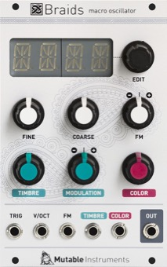

Key data
Macro-oscillator
| Parameter | Value |
|---|---|
| Width | 16HP |
| Depth | 25mm |
| +12V current | 100mA |
| -12V current | 15mA |
| Lifetime | 08/13 to 10/17 |
| Modulargrid | Link |
| Processor | STM32F103CBT6 |
| DAC | DAC8551 |
Original printed manual
Features
Synthesis models
The classics
- CS-80 style sawtooth with a notch.
- Continuously variable morphing between triangle, sawtooth, square and pulse, with character control.
- Square/sawtooth with pulse width control.
- Triangle to sine morphing, with wavefolder.
Direct digital synthesis
- Band-limited dual pulse train, with detuning.
- Dual square or sawtooth oscillator with hard sync.
- Triple saw, square, triangle or sine.
- Stack of three ring-modulated sine waves.
- Swarm of seven sawtooth waves.
- Comb-filtered sawtooth wave
- Circuit-bent sawtooth generator with sample rate reduction and bit toggling.
- Direct synthesis of filtered waveforms, casio CZ style.
- Low-fi or hi-fi vowel/formant synthesis.
- Harmonic oscillator.
- FM with various feedback paths.
Physical and percussive models
- Plucked string (Karplus Strong).
- Bowed string.
- Reed and flute.
- Bell and metallic drum.
- 808 bass drum, cymbal noise and snare drum.
Wavetables
- 256 waveforms, organized as 21 wavetables or as a 16x16 XY map.
- 4-note chord synthesis.
Noise sources
- Noise processed by a tuned multimode filter.
- Noise processed by a dual BP filter.
- Clocked digital noise.
- Cloud of sinusoidal grains.
- Particle synthesis.
Additional settings
These settings are accessible through a menu, and are not CV controllable.
- Bit-depth (from 4 to 16 bits) and sample rate (from 4kHz to 96kHz).
- Quantizer on the CV-input with a large selection of scales.
- Analog VCO-style linear detuning of higher frequencies.
- Analog VCO-style pitch drifting.
- Waveform quirks, unique to each module built.
- Built-in AD envelope, assignable to the oscillator frequency, the COLOR and TIMBRE parameters, and to the amplitude.
- META mode enabling CV-controlled model selection with the FM input.
Specifications
- All inputs: 100k impedance, DC to 4kHz.
- 12-bit CV capture.
- 96kHz, 16-bit audio processing (some algorithms are 2x or 4x oversampled).
Revisions and variants
2015
Hardware revision labelled "v5" with the following differences:
- 2x5 power connector (originally 2x8)
- Built-in 5V regulator.
- FINE knob handled in software (originally handled as an offset on the FM signal, not working in META mode as a side-effect)
- Thonkiconn jacks.
- Potentiometers have no center detent.